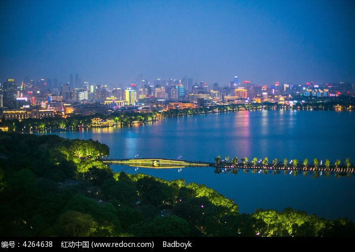

断桥景点介绍
断桥，位于中国浙江省杭州市西湖区白堤东端，是杭州西湖著名的景点之一。断桥残雪为西湖十景之一。断桥之名得于唐朝，其时有一座巨大的石桥，桥中间有座亭，是游人休息赏景的好去处，因为桥身似断非断，故民间称为断桥。
断桥不仅以景美著称，更因白娘子与许仙的爱情故事而闻名遐迩。传说中，白娘子与许仙在此相会，演绎了一段动人的爱情故事。因此，断桥也被视为爱情的象征，吸引了无数情侣前来打卡。


断桥不仅拥有美丽的自然景观，还蕴含着深厚的文化底蕴。在这里，你可以感受到杭州西湖的韵味，体验到中国传统文化的魅力。无论是漫步于桥上，还是驻足于湖畔，都能让你心旷神怡，流连忘返。